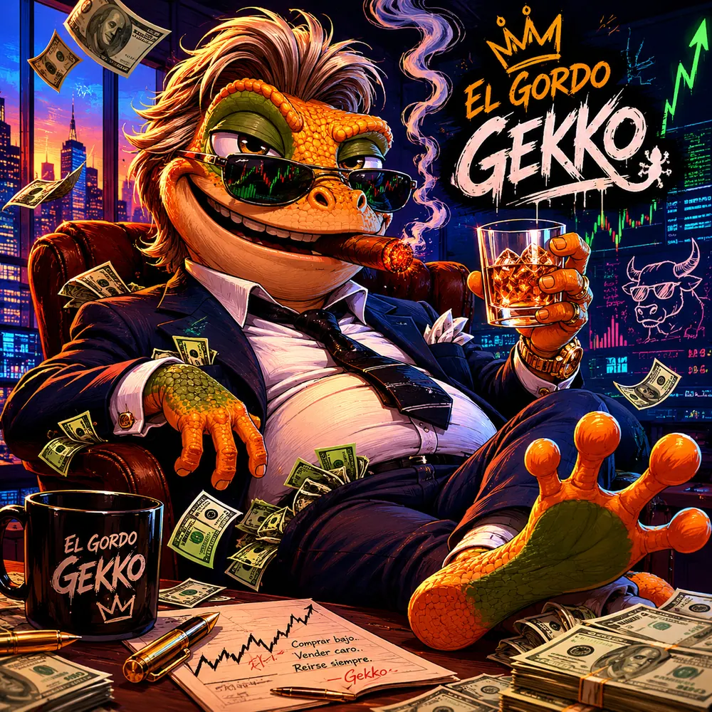
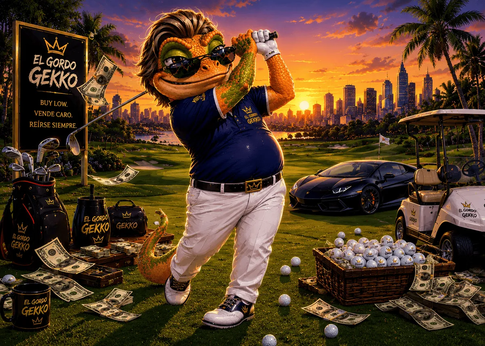
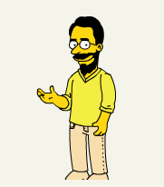

Experimento personal · no está disponible al público
El Gordo Gekko
Comprar barato. Vender caro. Reírse siempre.
Una plataforma de trading bots de para un solo usuario, contra una cuenta real de broker (API de IOL) corriendo estrategia de grid sobre instrumentos en dólares.

01 — Qué hace
Grid trading. Comprar abajo, vender arriba.

El Gordo no adivina para dónde va el mercado: aprovecha que se mueve. Deja las órdenes puestas de antemano y espera a que el precio venga a buscarlas.
Cada línea verde es una compra esperando abajo; cada roja, una venta esperando arriba. Baja y toca verde: compra. Sube y toca roja: vende. Los triangulitos son eso.
No lee noticias, no tiene corazonadas y no le importa el titular de hoy. Hace siempre lo mismo.
Comprar barato.
Vender caro.
Reírse siempre.
— El Gordo Gekko
02 — El origen
Conocé al Gordo Gekko.
En 1987 Oliver Stone estrenó Wall Street y Michael Douglas se puso el traje de Gordon Gekko: el tiburón de peinado impecable que explicaba, sin pestañear, que la codicia es buena. Se ganó un Oscar haciendo de villano y terminó siendo, sin proponérselo, el póster de toda una industria.
Pero este es El Gordo Gekko, y es bien Argento. Le sobra confianza, le falta capital, desconfía del peso por default y jamás se pierde un asado por una vela roja. Gordon Gekko quería el mundo para él. El Gordo Gekko quiere que la grilla cierre el round trip antes del almuerzo para ir a dormir la siesta.
Vive abajo a la derecha de la pantalla, porque todo sistema serio se merece una función poco seria. Reacciona a las ejecuciones, a los errores y a los reseteos, y reparte sabiduría financiera dudosa cada un par de minutos. Se lo puede silenciar en Configuración, pero se va a acordar.

Sí, el gecko es aspiracional. No, los retornos no lo son.

03 — Quién está atrás
El Gordo Compu
El Gordo Gekko se lleva los aplausos y las frases hechas. Yo soy el que mira por qué una orden no entró, el que discute con la API un domingo, y el único usuario que este sistema va a tener.
04 — Disponibilidad
Esto es un experimento. No está disponible al público.
No hay registro, ni lista de espera, ni descarga, ni invitación, ni plan pago. EGG corre en una máquina, contra una cuenta de broker, para una persona.
- ✕ No es un servicio financiero licenciado ni registrado de ningún tipo.
- ✕ No es asesoramiento de inversión, ni una recomendación, ni una promesa de rendimiento.
- ✕ No es multiusuario: todo el diseño asume un solo usuario y un solo escritor.
- ✓ Es un sistema real colocando órdenes reales.